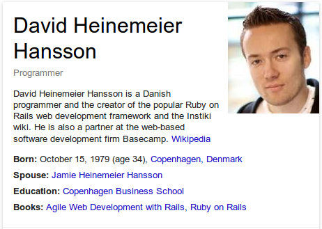
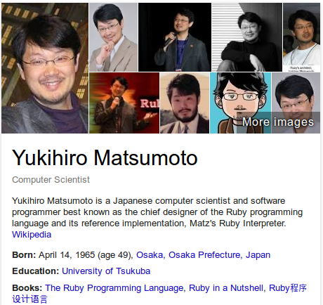

Ruby on Rails
Ruby 2.0
Rails 4.0
João Lucas Pereira de Santana
Apresentação
João Lucas Pereira de Santana
-
twitter | github | fb | gtalk : jlucasps - Ciência da Computação pela UFLA
- JavaScript
- Ruby
- Java
- linkedin.com/in/jlucasps
Ruby on Rails - Origem
Open source desde 2004
David Heinemeier Hansson (DHH)
Rails Core Team
Maio/2014
 |
 |
 |
 |
 |
 |
 |
 |
 |
 |
 |
 |
 |
|||||
Linguagem Ruby
Yukihiro “Matz” Matsumoto
Linguagem Ruby
- Interpretada
-
Orientada a Objetos
- Tudo é objeto
- Operação são chamadas de métodos em algum objeto
-
Tipagem Dinâmica
- Objetos possuem tipos
- Variáveis não possuem tipos
Linguagem Ruby
- Dinâmica
- Adicionar / modificar código em tempo de execução (metaprogramação)
- Inspecionar e analisar objetos (reflection)
Interpretada
Abra o console e digite:
jlucasps@lotus:~/Projects/ruby$ irb-ruby-2.0.0-p353
2.0.0-p353 :001 > 2 + 7
=> 9
2.0.0-p353 :002 > "Joao Lucas".capitalize
=> "Joao lucas"
2.0.0-p353 :003 > "Joao Lucas".upcase
=> "JOAO LUCAS"
2.0.0-p353 :004 >
Interpretada
Crie o arquivotoday.rb com o seguinte conteúdo
t = Time.now
puts "Hoje é dia #{ t.strftime( '%m/%d/%Y' ) }."
print "Hora atual: #{ t.strftime(' %I:%M%p' ) }. "
puts "Tenha uma boa semana!"
jlucasps@lotus:~/Projects/ruby$ ruby today.rb
Hoje é dia 05/14/2014.
Hora atual: 02:30AM. Tenha uma boa semana!
jlucasps@lotus:~/Projects/ruby$
Orientada a Objetos
No console:
jlucasps@lotus:~/Projects/ruby$ irb-ruby-2.0.0-p353
2.0.0-p353 :001 > class Book; end
=> nil
2.0.0-p353 :002 > Book.new.class
=> Book
2.0.0-p353 :003 > Book.new.object_id
=> 7256240
2.0.0-p353 :004 > Book.class
=> Class
2.0.0-p353 :005 > Book.object_id
=> 7359560